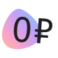

- 
0 ₽ за старт в каждой поездке

Бесплатная пауза 15 минут в поездке — например, чтобы зайти за кофе или передохнуть

Катаетесь с друзьями? Бронируйте до трёх самокатов с аккаунта с абонементом — так у всех будет бесплатный старт

Если самокат недостаточно заряжен или с ним неудобно переходить дорогу, замените по пути на другой — это бесплатно
Вступайте в клуб Самокатов
Купите абонемент, чтобы стать частью клуба в новом сезоне–2024. 8 месяцев за
499₽
3190₽